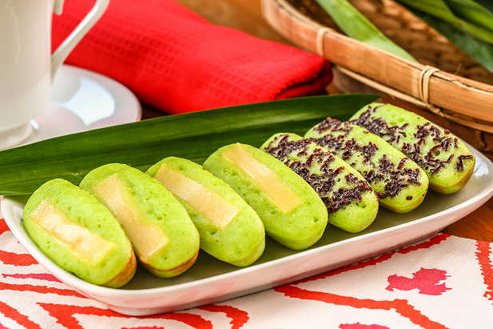

Pukis Recipe

Kue pukis merupakan camilan yang terbuat dari campuran tepung, gula, telur dan santan. Rasanya yang lembut dan manis membuat jajanan ini digemari semua kalangan.
Ingredients
- 180 ml santan
- 3 butir telur
- 100 gram gula pasir
- 150 gram tepung terigu
- 1/2 sendok makan ragi instan
- 60 ml air hangat
- meses atau keju
- margarin
Steps
- Masak santan hingga mendidih. Angkat dan diamkan hingga hangat
- Campurkan ragi dengan air hangat dan aduk hingga berbuih
- Kocok telur dan gula hingga kental dan mengembang
- Tambahkan terigu sedikit-sedikit sambil aduk hingga rata
- Masukkan larutn ragi ke dalam adonan tepung. Aduk rata
- Tambahkan santan, aduk rata. Diamkan selama 30 menit
- Panaskan cetakan pukis di atas api sedang, semir dengan sedikit margarin
- Tuangkan adonan kue pukis ke dalam lubang cetakan hingga hampir penuh
- Taburkan parutan keju atau meses, tutup cetakan hingga mengembang
- Setelah pinggirnya kering, angkat